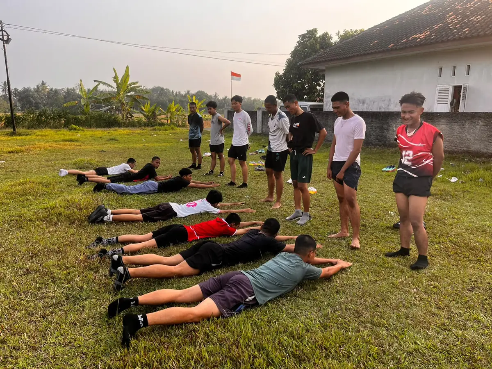
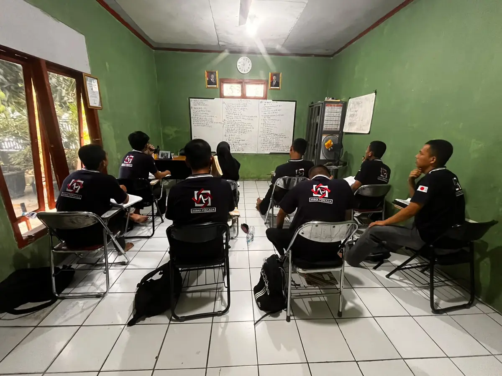
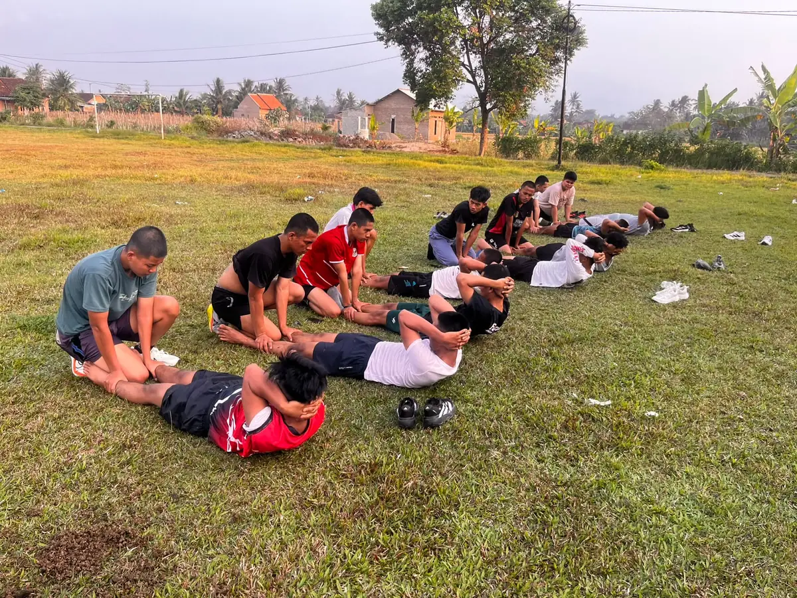
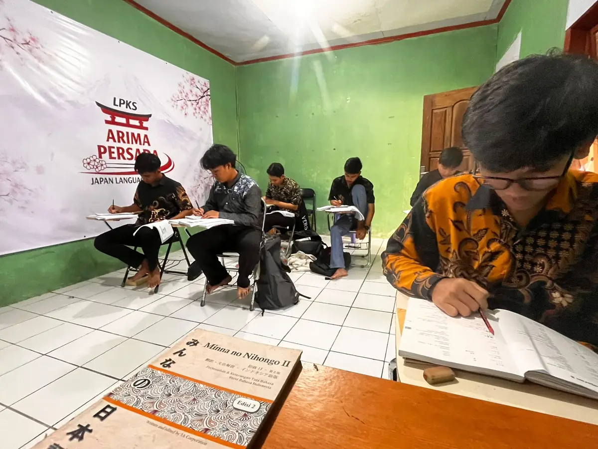
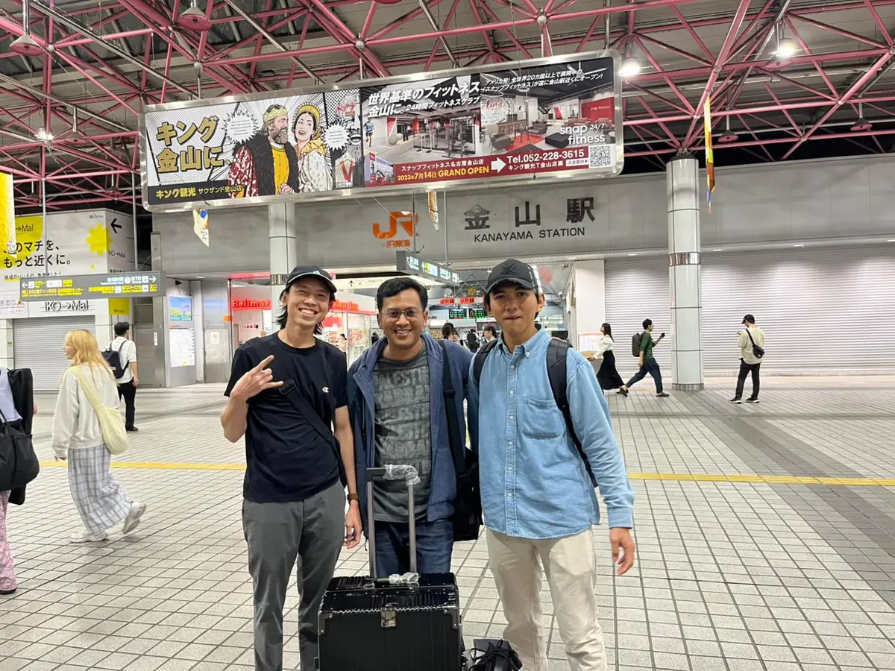

PROGRAM 01Ikusei Shuro / Magang
Magang Jepang
Jalur pemagangan untuk mempelajari keterampilan teknis dan memperoleh pengalaman kerja di lingkungan industri Jepang.
Untuk calon peserta magangCek kecocokan ↗
Bangun bekal bahasa, keterampilan, dan mental kerja untuk membuka peluang masa depan di Jepang. Mulai dari mengenali pilihan program yang paling sesuai dengan dirimu.



LPKS Arima Persada hadir untuk membantu calon tenaga kerja mengenal jalur karier ke Jepang dan mempersiapkan diri melalui pembelajaran bahasa serta pemahaman keterampilan dan budaya kerja.
Setiap perjalanan dimulai dari informasi yang tepat. Kenali pilihan program, pahami persiapannya, lalu konsultasikan kebutuhanmu dengan tim Arima.
Setiap program memiliki tujuan, ketentuan, dan persiapan yang berbeda. Pelajari gambaran umumnya sebelum memilih jalur.

PROGRAM 01Jalur pemagangan untuk mempelajari keterampilan teknis dan memperoleh pengalaman kerja di lingkungan industri Jepang.

PROGRAM 02Jalur kerja berketerampilan khusus. Persyaratan bahasa, ujian keterampilan, dan sektor kerja mengikuti ketentuan yang berlaku.
Jalur profesional bagi kandidat dengan latar pendidikan atau keahlian yang relevan dan memenuhi persyaratan posisi.
Catatan: informasi di atas merupakan gambaran umum. Kelayakan, persyaratan, durasi, dan proses penempatan perlu dikonfirmasi sesuai ketentuan terbaru dan posisi yang tersedia.
Tak perlu mengetahui semuanya sejak awal. Mulai dari mengenali profil, lalu susun langkah bersama tim.
Jawab kuis singkat untuk memetakan minat, pendidikan, dan kesiapanmu.
Pelajari pilihan jalur dan persyaratan yang perlu kamu persiapkan.
Diskusikan hasil awal dan pertanyaanmu dengan admin Arima.
Tentukan langkah belajar dan persiapan berikutnya sesuai kebutuhan.
Jawab beberapa pertanyaan, lalu lihat rekomendasi awal untukmu.
Kenali suasana persiapan melalui dokumentasi kegiatan belajar, latihan fisik, dan perjalanan ke Jepang.
Belajar bahasa Jepang dan membiasakan diri dengan proses latihan.
Aktivitas fisik menjadi bagian dari rutinitas untuk menjaga kebugaran dan kebersamaan.

03 / MELANGKAHPelajari jalur, persyaratan, dan proses yang sesuai sebelum mengambil keputusan.
Awalnya ragu karena belum bisa bahasa Jepang sama sekali. Tapi di Arima diajari dari nol, lingkungannya disiplin tapi sangat kekeluargaan.
Prosesnya sangat transparan. Mulai dari biaya, dokumen, sampai persiapan mental dijelaskan detail. Adminnya fast respon kalau kita tanya.
Latihan fisiknya berat tapi bikin mental jadi kuat. Pas sampai Jepang, saya ngerasa lebih siap adaptasi sama ritme kerja di sana.
Jawab pertanyaan berikut sesuai kondisimu. Hasil ini adalah rekomendasi awal, bukan keputusan kelayakan atau jaminan penempatan.
Menganalisis profil Anda...
Pilih jawaban yang paling sesuai dengan kondisimu saat ini.
Hasil kuis bukan penetapan kelayakan. Persyaratan dan peluang aktual perlu diverifikasi melalui konsultasi.
Jika ingin mengetahui program, persiapan bahasa, atau langkah pendaftaran, hubungi tim kami untuk mendapatkan informasi lebih lanjut.